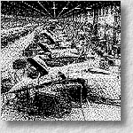
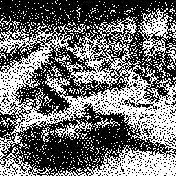
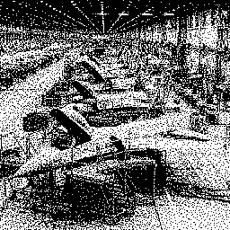

 Halftoning with Selective Preciptation and Adaptive Clustering
Tien-Tsin Wong and Siu-chi Hsu ,
Graphics Gems V, Edited by Alan Paeth, AP Professional, 1995, pp. 302-313.Abstract
- Halftoning techniques are used to display continuous tone pictures on bilevel displays and printers (or on those with a very limited number of shades). The most popular and well-known techniques are ordered dither and error diffusion. The latter produces aperiodic patterns with limited low-frequency components, a useful property, but its dispersed dots suffer from an excessive smudging, which is especially objectionable on high-resolution devices. Ordered dither, on the other hand, is capable of clustering the dots produced by using a properly designed dither matrix. However, a regular dither pattern is then clearly visible in the output picture. A comparison of most digital halftoning techniques can be found in the literature.
- Recently, researchers have been investigating new halftoning techniques that traverse images along a space-filling curve, based upon a Peano curve algorithm of the last decade. The space-filling curve halftoning is attractive because of the pleasant smooth grains in the resultant image and the aperiodicity of the halftone pattern. Velho and de Miranda Gomes further proposed a clustered-dot space filling curve halftoning algorithm that reduces the smudging problem. However, clustering the dot naively would blur the image excessively. This gem presents two improvements, selective precipitation and adaptive clustering, used to minimize blurring.
Download Paper
- Acrobat: sfc.pdf (203 KB)
Source Code
Click sfc.tar.gz to download the latest version of the test program of the halftone technique presented in this gem.Interesting Images
The original grayscale image named F16 factory. The image size is 256x256.
The halftone result if we use the original clustered-dot space filling curve halftoning method. The image size is 256x256.
 The improved result when adaptive clustering and selective precipitation are performed. The image size is 256x256.

Related Publications
- " The Modelling of Natural Imperfections and an Improved Space Filling Curve Halftoning Technique",
T. T. Wong,
Master Thesis, Computer Science Department, The Chinese University of Hong Kong, 1994.